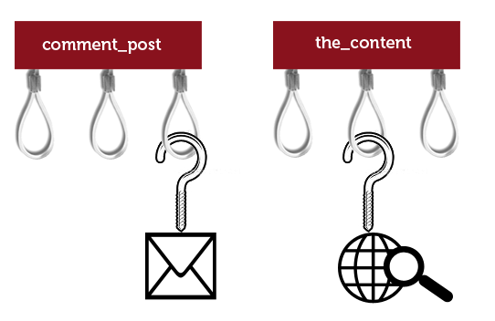

Who I am?
Sébastien Rancoud
Developer Front/Back for 7 years
Today Lead Developer at Steaw, digital's agency
Wordpress
CMS oriented publishing
1 website on 5 in the world
Stats W3techs april 2014:
no CMS 63.7% - Wordpress 22% - Joomla 3.1% - Drupal 1.9%
Technical Requirement
A hosting supporting:
- PHP 5.2.4 or higher
- Mysql 5.0 or higher
That's all
Installation
- Download at http://wordpress.org
- Unzip the archive
- Push all files on your hosting
- Visit your website for launching the wizard
- Access database
- Create admin account
- Add email for notifications
Administration
- Themes
- Posts
- Tags
- Pages
- Comments
- Settings
Theme / Template

Theme / Template
Basic
Edit colors
Edit menu
Add widgets
Evolution: Create own theme
Template different per page
Custom Settings
Post
Basic
1 title and 1 free text
1 featured image
Timestamp
Evolution: Custom Post
New entry in administration
Template different
Add custom fields
Meta data
Basic
Evolution: Custom Fields
Add automatically form field
Have structuring template (use new meta data)
Tags and categories
Basic
Category
Tag
Evolution: Custom Taxonomy
Different group
New entry for reading posts
Populars Plugins
- Akismet
- Google XML Sitemaps
- Contact Form 7
- WordPress SEO by Yoast
- All in One SEO Pack
- Jetpack by WordPress.com
- etc...
Hook
When don't use Wordpress
E-commerce
Forum
CRM
Wordpress for high-traffic websites?
YES
Cache's plugin (W3 Total Cache, WP Super Cache)
Varnish
Questions?
Sources
- Logo Wordpress : Wikipedia
- Picture Theme / Template : La Réclame
- Picture Hook : WPNotlari
{kind=link}